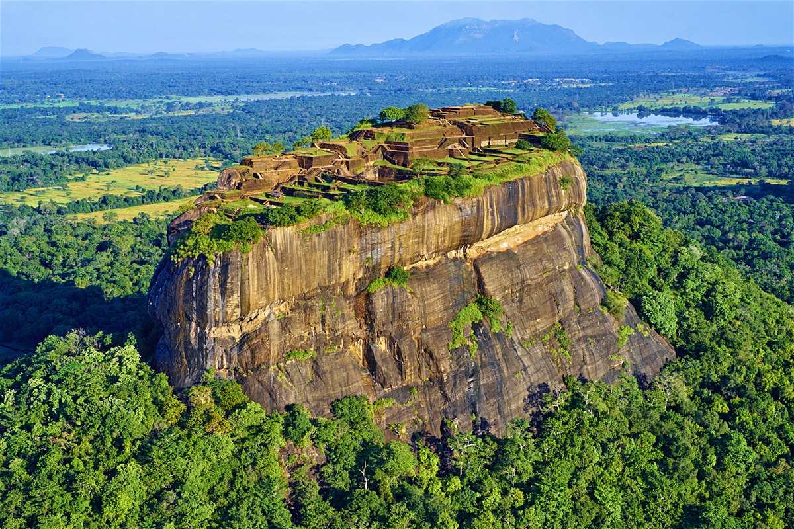

Sigiriya [Lion's Rock]
Sigiriya also known as the Lion's Rock is a rock fortress and a palace located in the Matale district of Sri Lanka. This ruin is surrounded by gardens, ponds and other structures. Sigiriya was built by King Kassapa and it is included as a World Heritage site. Sigiriya is the best preserved city centre in Asia.The capital and the royal palace was abandoned after the king's death. It was used as a Buddhist monastery until the 14th century. Sigiriya today is a UNESCO listed World Heritage Site. It is one of the best preserved examples of ancient urban planning..
 Temple of the Tooth.Sri Dalada Maligawa or the Temple of the Sacred Tooth Relic is a Buddhist temple in the city of Kandy, Sri Lanka. It is located in the royal palace complex of the former Kingdom of Kandy, which houses the relic of the tooth of the Buddha. Since ancient times, the relic has played an important role in local politics because it is believed that whoever holds the relic holds the governance of the country. Kandy was the last capital of the Sri Lankan kings and is a World Heritage Site mainly due to the temple.
Bhikkhus of the two chapters of Malwatte and Asgiriya conduct daily worship in the inner chamber of the temple. Rituals are performed three times daily: at dawn, at noon and in the evenings. On Wednesdays, there is a symbolic bathing of the relic with an herbal preparation made from scented water and fragrant flowers called Nanumura Mangallaya. This holy water is believed to contain healing powers and is distributed among those present..
Temple of the Tooth.Sri Dalada Maligawa or the Temple of the Sacred Tooth Relic is a Buddhist temple in the city of Kandy, Sri Lanka. It is located in the royal palace complex of the former Kingdom of Kandy, which houses the relic of the tooth of the Buddha. Since ancient times, the relic has played an important role in local politics because it is believed that whoever holds the relic holds the governance of the country. Kandy was the last capital of the Sri Lankan kings and is a World Heritage Site mainly due to the temple.
Bhikkhus of the two chapters of Malwatte and Asgiriya conduct daily worship in the inner chamber of the temple. Rituals are performed three times daily: at dawn, at noon and in the evenings. On Wednesdays, there is a symbolic bathing of the relic with an herbal preparation made from scented water and fragrant flowers called Nanumura Mangallaya. This holy water is believed to contain healing powers and is distributed among those present..